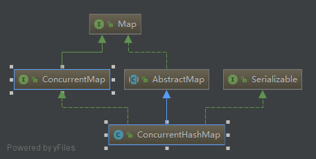

ConcurrentHashMap是升级版的hashTable，是线程安全的，但是它的线程安全实现并不对整个对象加锁，所以性能比较高。
从下方的图可以看出，它和HashMap以及HashTable没有任何直接的继承关系

1、构造函数以及结构
public ConcurrentHashMap(int initialCapacity) {
if (initialCapacity < 0)
throw new IllegalArgumentException();
int cap = ((initialCapacity >= (MAXIMUM_CAPACITY >>> 1)) ?
MAXIMUM_CAPACITY :
//该方法和hashMap中实现一样
tableSizeFor(initialCapacity + (initialCapacity >>> 1) + 1));//此处为什么要扩大1.5倍+1，原因不明（文末补充说明）
this.sizeCtl = cap;
}
比hashMap多了一个
//第三个参数是预估的并发修改线程数
public ConcurrentHashMap(int initialCapacity,
float loadFactor, int concurrencyLevel) {
if (!(loadFactor > 0.0f) || initialCapacity < 0 || concurrencyLevel <= 0)
throw new IllegalArgumentException();
//如果传入的初始容量大小，小于并发数，则初始容量用并发数计算
if (initialCapacity < concurrencyLevel) // Use at least as many bins
initialCapacity = concurrencyLevel; // as estimated threads
//同样是比hashMap多进行了一步初始容量放大操作
long size = (long)(1.0 + (long)initialCapacity / loadFactor);//此处为什么要除以loadFactor+1，原因不明（文末补充说明）
int cap = (size >= (long)MAXIMUM_CAPACITY) ?
MAXIMUM_CAPACITY : tableSizeFor((int)size);
this.sizeCtl = cap;
}
构造函数将计算后的容量大小存在sizeCtl中，这个和HashMap的容量不太一样，看一下jdk的说明
-1是在初始化，其他负数的时候，是在扩容；
0为默认值
正数为初始化大小
/**
* Table initialization and resizing control. When negative, the
* table is being initialized or resized: -1 for initialization,
* else -(1 + the number of active resizing threads). Otherwise,
* when table is null, holds the initial table size to use upon
* creation, or 0 for default. After initialization, holds the
* next element count value upon which to resize the table.
*/
private transient volatile int sizeCtl;
还有unsafe类相关的一些变量值，先贴出来，后续会用到
// Unsafe mechanics
private static final sun.misc.Unsafe U;
private static final long SIZECTL;
private static final long TRANSFERINDEX;
private static final long BASECOUNT;
private static final long CELLSBUSY;
private static final long CELLVALUE;
private static final long ABASE;
private static final int ASHIFT;
static {
try {
U = sun.misc.Unsafe.getUnsafe();
Class<?> k = ConcurrentHashMap.class;
SIZECTL = U.objectFieldOffset
(k.getDeclaredField("sizeCtl"));
TRANSFERINDEX = U.objectFieldOffset
(k.getDeclaredField("transferIndex"));
BASECOUNT = U.objectFieldOffset
(k.getDeclaredField("baseCount"));
CELLSBUSY = U.objectFieldOffset
(k.getDeclaredField("cellsBusy"));
Class<?> ck = CounterCell.class;
CELLVALUE = U.objectFieldOffset
(ck.getDeclaredField("value"));
Class<?> ak = Node[].class;
//获取数据的偏移量（static方法又怎么能获取到数据的偏移量？）
ABASE = U.arrayBaseOffset(ak);
//获取数组中每个元素占用的内存大小
int scale = U.arrayIndexScale(ak);
if ((scale & (scale - 1)) != 0)
throw new Error("data type scale not a power of two");
ASHIFT = 31 - Integer.numberOfLeadingZeros(scale);
} catch (Exception e) {
throw new Error(e);
}
}
ConcurrentHashMap的几乎所有成员变量都使用了volatile修饰，以保证可见性
/* ---------------- Fields -------------- */
/**
* The array of bins. Lazily initialized upon first insertion.
* Size is always a power of two. Accessed directly by iterators.
*/
transient volatile Node<K,V>[] table;
/**
* The next table to use; non-null only while resizing.
*/
private transient volatile Node<K,V>[] nextTable;
/**
* Base counter value, used mainly when there is no contention,
* but also as a fallback during table initialization
* races. Updated via CAS.
*/
private transient volatile long baseCount;
/**
* Table initialization and resizing control. When negative, the
* table is being initialized or resized: -1 for initialization,
* else -(1 + the number of active resizing threads). Otherwise,
* when table is null, holds the initial table size to use upon
* creation, or 0 for default. After initialization, holds the
* next element count value upon which to resize the table.
*/
private transient volatile int sizeCtl;
/**
* The next table index (plus one) to split while resizing.
*/
private transient volatile int transferIndex;
/**
* Spinlock (locked via CAS) used when resizing and/or creating CounterCells.
*/
private transient volatile int cellsBusy;
/**
* Table of counter cells. When non-null, size is a power of 2.
*/
private transient volatile CounterCell[] counterCells;
// views
private transient KeySetView<K,V> keySet;
private transient ValuesView<K,V> values;
private transient EntrySetView<K,V> entrySet;
两个节点内部类的成员变量同样使用了volatile进行修饰
static class Node<K,V> implements Map.Entry<K,V> {
final int hash;
final K key;
volatile V val;
volatile Node<K,V> next;
treeNode
static final class TreeNode<K,V> extends Node<K,V> {
TreeNode<K,V> parent; // red-black tree links
TreeNode<K,V> left;
TreeNode<K,V> right;
TreeNode<K,V> prev; // needed to unlink next upon deletion
boolean red;
treeBin
static final class TreeBin<K,V> extends Node<K,V> {
//树的根节点
TreeNode<K,V> root;
//first节点是转化成树之前的链表的头结点
volatile TreeNode<K,V> first;
volatile Thread waiter;
//锁状态：0无锁
volatile int lockState;
// values for lockState
static final int WRITER = 1; // set while holding write lock
static final int WAITER = 2; // set when waiting for write lock
static final int READER = 4; // increment value for setting read lock
/**
* Creates bin with initial set of nodes headed by b.
*/
TreeBin(TreeNode<K,V> b) {
super(TREEBIN, null, null, null);
this.first = b;
TreeBin有一个虚拟的根节点，我暂且称之为虚根节点，此处截取了构造函数的前两行，从中可以看出TreeBin 是一个虚节点，实际值从root开始
扩容时使用的ForwardingNode
static final class ForwardingNode<K,V> extends Node<K,V> {
final Node<K,V>[] nextTable;
ForwardingNode(Node<K,V>[] tab) {
//hash值设为MOVED状态
super(MOVED, null, null, null);
this.nextTable = tab;
}
2、初始化
初始化的过程发生在第一次往map中存值的时候，这儿直接看初始化过程。
/**
* Initializes table, using the size recorded in sizeCtl.
*/
private final Node<K,V>[] initTable() {
Node<K,V>[] tab; int sc;
while ((tab = table) == null || tab.length == 0) {
//小于0说明有其他线程正在初始化，让出cpu，等待下次执行进入while重新判断
if ((sc = sizeCtl) < 0)
Thread.yield(); // lost initialization race; just spin
//通过cas将sc置为-1，cas保证这一步操作只有一个线程能成功，从而只会有一个线程去执行下面的初始化操作
else if (U.compareAndSwapInt(this, SIZECTL, sc, -1)) {
try {
//双重判断防止重复初始化
if ((tab = table) == null || tab.length == 0) {
//如果没有给定初始值，则使用默认值16
int n = (sc > 0) ? sc : DEFAULT_CAPACITY;
@SuppressWarnings("unchecked")
Node<K,V>[] nt = (Node<K,V>[])new Node<?,?>[n];
table = tab = nt;
//将sc变为容量的四分之三，相当于*0.75
sc = n - (n >>> 2);
}
} finally {
sizeCtl = sc;
}
break;
}
}
return tab;
}
3、数据保存
public V put(K key, V value) {
return putVal(key, value, false);
}
/** Implementation for put and putIfAbsent */
final V putVal(K key, V value, boolean onlyIfAbsent) {
//key和value都不允许为null,否则抛出空指针异常
if (key == null || value == null) throw new NullPointerException();
int hash = spread(key.hashCode());
int binCount = 0;
for (Node<K,V>[] tab = table;;) {
Node<K,V> f; int n, i, fh;
//为空则初始化，
if (tab == null || (n = tab.length) == 0)
tab = initTable();
//cas判断该桶内是否为空
else if ((f = tabAt(tab, i = (n - 1) & hash)) == null) {
//通过cas存数据，如果存入成功，则跳出循环，否则，说明有其他线程已经在该位置存了数据，重新进入循环
if (casTabAt(tab, i, null,
new Node<K,V>(hash, key, value, null)))
break; // no lock when adding to empty bin
}
else if ((fh = f.hash) == MOVED)
tab = helpTransfer(tab, f);
else {
V oldVal = null;
synchronized (f) {
//锁内判断桶的头结点有没有变化，没有变化的话继续操作，否则释放锁进入下一轮循环
//这个判断的原因：可能存在其他线程删除或修改了桶的头结点
if (tabAt(tab, i) == f) {
//fh为桶头结点的hash值，为负数时表示有其他线程正在变更该桶
if (fh >= 0) {
binCount = 1;//每遍历一个节点，binCount加1，记录桶链表的节点个数，后续用于判断是否需要转换成树
for (Node<K,V> e = f;; ++binCount) {
K ek;
//以下条件满足其中一个说明key已经存在：1、hash值相等且key值完全相等2、key的equals方法相等
//更新value，然后跳出循环
if (e.hash == hash &&
((ek = e.key) == key ||
(ek != null && key.equals(ek)))) {
oldVal = e.val;
if (!onlyIfAbsent)
e.val = value;
break;
}
//key不存在，则进入下次循环，直到找到该桶链表的尾结点，然后接将新的结点挂在该桶链表的最后位置
Node<K,V> pred = e;
if ((e = e.next) == null) {
pred.next = new Node<K,V>(hash, key,
value, null);
break;
}
}
}
//如果桶的头结点是树节点，转到树的处理方式
else if (f instanceof TreeBin) {
Node<K,V> p;
binCount = 2;
if ((p = ((TreeBin<K,V>)f).putTreeVal(hash, key,
value)) != null) {
oldVal = p.val;
if (!onlyIfAbsent)
p.val = value;
}
}
}
}
if (binCount != 0) {
//节点个数大于等于树化阈值（8），转化成树
if (binCount >= TREEIFY_THRESHOLD)
treeifyBin(tab, i);
if (oldVal != null)//如果是修改，返回旧值
return oldVal;
break;
}
}
}
addCount(1L, binCount);
return null;
}
获取元素调用tabAt方法
static final <K,V> Node<K,V> tabAt(Node<K,V>[] tab, int i) {
return (Node<K,V>)U.getObjectVolatile(tab, ((long)i << ASHIFT) + ABASE);
}
其中((long)i << ASHIFT) + ABASE是计算地址偏移量
通过CAS存数据
static final <K,V> boolean casTabAt(Node<K,V>[] tab, int i, Node<K,V> c, Node<K,V> v) {
return U.compareAndSwapObject(tab, ((long)i << ASHIFT) + ABASE, c, v);
}
结点hash值含义：
static final int MOVED = -1; // hash for forwarding nodes
static final int TREEBIN = -2; // hash for roots of trees
static final int RESERVED = -3; // hash for transient reservations
如果桶内节点是树，则走下面这段逻辑
final TreeNode<K,V> putTreeVal(int h, K k, V v) {
Class<?> kc = null;
boolean searched = false;
for (TreeNode<K,V> p = root;;) {
int dir, ph; K pk;
if (p == null) {
first = root = new TreeNode<K,V>(h, k, v, null, null);
break;
}
else if ((ph = p.hash) > h)
dir = -1;
else if (ph < h)
dir = 1;
//经历了前面两个if,此时hash一定相等，如果key相等或者equal相等，则直接返回该节点
else if ((pk = p.key) == k || (pk != null && k.equals(pk)))
return p;
//如果没有比较器，或者比较器不相同，或者值比较不相等
else if ((kc == null &&
(kc = comparableClassFor(k)) == null) ||
(dir = compareComparables(kc, k, pk)) == 0) {
if (!searched) {
TreeNode<K,V> q, ch;
searched = true;
//从左右子树查找是否存在key相同的结点，如果存在直接返回；否则代码继续往下走
if (((ch = p.left) != null &&
(q = ch.findTreeNode(h, k, kc)) != null) ||
((ch = p.right) != null &&
(q = ch.findTreeNode(h, k, kc)) != null))
return q;
}
dir = tieBreakOrder(k, pk);
}
TreeNode<K,V> xp = p;
//小于等于时都从左子树
if ((p = (dir <= 0) ? p.left : p.right) == null) {
TreeNode<K,V> x, f = first;
first = x = new TreeNode<K,V>(h, k, v, f, xp);
//头结点的前驱指针指向新节点
if (f != null)
f.prev = x;
//根据dir不同，挂在左或右子树上
if (dir <= 0)
xp.left = x;
else
xp.right = x;
if (!xp.red)
x.red = true;
else {
//在putTreeVal方法前，已经通过synchronized锁住桶头结点，也就是树根节点，此处锁整棵树，是因为红黑树自平衡调整有可能会使得根节点发生变化
lockRoot();
try {
//这个里面代码只是对插入节点后的红黑树平衡调整
root = balanceInsertion(root, x);
} finally {
unlockRoot();
}
}
break;
}
}
assert checkInvariants(root);
return null;
}
获取比较器
static Class<?> comparableClassFor(Object x) {
if (x instanceof Comparable) {
Class<?> c; Type[] ts, as; Type t; ParameterizedType p;
if ((c = x.getClass()) == String.class) // bypass checks
return c;
if ((ts = c.getGenericInterfaces()) != null) {//获取接口
for (int i = 0; i < ts.length; ++i) {
if (((t = ts[i]) instanceof ParameterizedType) &&
((p = (ParameterizedType)t).getRawType() ==
Comparable.class) &&
(as = p.getActualTypeArguments()) != null &&
as.length == 1 && as[0] == c) // type arg is c
return c;
}
}
}
return null;
}
x为空或者不是同一个比较器，则返回0，否则返回比较大小
static int compareComparables(Class<?> kc, Object k, Object x) {
return (x == null || x.getClass() != kc ? 0 :
((Comparable)k).compareTo(x));
}
final TreeNode<K,V> findTreeNode(int h, Object k, Class<?> kc) {
if (k != null) {
TreeNode<K,V> p = this;
do {
int ph, dir; K pk; TreeNode<K,V> q;
TreeNode<K,V> pl = p.left, pr = p.right;
//hash值小，从左子树找
if ((ph = p.hash) > h)
p = pl;
//hash值大，从右子树找
else if (ph < h)
p = pr;
//hash相等，key相同 直接返回
else if ((pk = p.key) == k || (pk != null && k.equals(pk)))
return p;
//hash相等，左子树为空，从右子树找
else if (pl == null)
p = pr;
//hash相等，左子树不为空，右子树为空，从左子树找
else if (pr == null)
p = pl;
//hash相等，左右字数均不为空，且存在比较器
else if ((kc != null ||
(kc = comparableClassFor(k)) != null) &&
(dir = compareComparables(kc, k, pk)) != 0)
//小于节点key,从左子树找，大于，从右子树找
p = (dir < 0) ? pl : pr;
//递归
else if ((q = pr.findTreeNode(h, k, kc)) != null)
return q;
else
p = pl;
} while (p != null);//未找到key相同的，截止，返回null
}
return null;
}
putTreeVal接下来用到了tieBreakOrder方法
/**
* Tie-breaking utility for ordering insertions when equal
* hashCodes and non-comparable. We don't require a total
* order, just a consistent insertion rule to maintain
* equivalence across rebalancings. Tie-breaking further than
* necessary simplifies testing a bit.
*/
static int tieBreakOrder(Object a, Object b) {
int d;
if (a == null || b == null ||
(d = a.getClass().getName().
compareTo(b.getClass().getName())) == 0)
d = (System.identityHashCode(a) <= System.identityHashCode(b) ?
-1 : 1);
return d;
}
在调用该方法前已可以确定a、b（就是key）均不会为null,但是是不是同一个类就不一定了
不是同一个类时，返回0
是同一个类时，返回原生hashCode大小比较，注意相等时，返回-1；
关于System.identityHashCode 下方有说明
方法注释上说，在hash值相等且non-comparable情况下使用该方法，non-comparable我一开始以为是没有比较器的意思，但是发现，当存在比较器，且二者比较大小相同的情况下，也会进入该方法，所以也不知道该怎么表达这个词的含义
看一下锁树的过程
private final void lockRoot() {
if (!U.compareAndSwapInt(this, LOCKSTATE, 0, WRITER))
contendedLock(); // offload to separate method
}
cas改变树的锁状态为writer（1）状态
cas成功直接返回，否则进入contendedLock
什么情况下会cas失败？一开始时以为一个线程正在调整树，根节点发生变化，此时锁状态为writer(1),另一个线程又落入了相同桶,状态不为0，cas失败；后来发现，红黑树的自平衡调整，压根就不会改变虚根节点（地址不变，里面的真正的根节点可能会变）
/**
* Possibly blocks awaiting root lock.
*/
private final void contendedLock() {
boolean waiting = false;
for (int s;;) {
//TreeBin中锁状态总共提供有四个值：0、1、2、4，对应二进制位000、001、010、100（只写了后三位）
//这个方法继续往下看，就会发现状态并不是四个，还有两个状态3和6，分别对应：011 、 110，这两个状态并不满足第一个if
//WAITER为2，~WAITER就是 101，所以当lockState为 0（无锁）和010（等待状态）时，下面if条件成立，换句话说，在没有锁或者锁状态为waiter时，可以改锁状态为写状态
if (((s = lockState) & ~WAITER) == 0) {
if (U.compareAndSwapInt(this, LOCKSTATE, s, WRITER)) {
if (waiting)
waiter = null;
return;
}
}
//WAITER为010,除了它本身的另外三个状态和它相与值都为0，又状态0满足上面的if（多线程下，可能上面if时不为0，下面变成0）,所以锁状态为1（writer）和4(reader)时，进入下面if
//所以状态1（写锁）会被改成3，状态4（读锁）会被改成6，又出来两个状态;如果状态本身是3或者6.这个条件也不满足
else if ((s & WAITER) == 0) {
if (U.compareAndSwapInt(this, LOCKSTATE, s, s | WAITER)) {
waiting = true;
waiter = Thread.currentThread();//将等待线程设为自己
}
}
//状态3或者6时会进入这个分支
//先说下状态6，有一个线程先get会加读锁，然后又有一线程put此时会变成状态6，同时继续循环会使得执行put操作的线程进入下面分支，陷入wait状态；
else if (waiting)
LockSupport.park(this);//阻塞当前线程，LockSupport在ReentrantLock中大量使用，后续再学习该类
}
}
对应的解锁树的过程
private final void unlockRoot() {
lockState = 0;
}
只是将锁状态设置成了0，即无锁状态；注意并无对waiter线程的unpark操作
搜索了整个类中的代码，只在find函数中对waiter线程进行了unpark操作
所以，自旋的线程或者新加入的线程会有yige
不变性规则检测
/**
* Recursive invariant check
*/
static <K,V> boolean checkInvariants(TreeNode<K,V> t) {
TreeNode<K,V> tp = t.parent, tl = t.left, tr = t.right,
tb = t.prev, tn = (TreeNode<K,V>)t.next;
//当前节点的前驱节点的后继节点一定是当前节点
if (tb != null && tb.next != t)
return false;
//当前节点的后继节点的前驱节点一定是当前节点
if (tn != null && tn.prev != t)
return false;
//当前节点一定是当前节点的父节点的 左右子孩子之一
if (tp != null && t != tp.left && t != tp.right)
return false;
//当前节点的左孩子节点的父节点是当前节点，且当前节点的hash值小于等于左孩子节点的hash值
if (tl != null && (tl.parent != t || tl.hash > t.hash))
return false;
//右孩子节点情况同上
if (tr != null && (tr.parent != t || tr.hash < t.hash))
return false;
//父子节点不可同时为红色
if (t.red && tl != null && tl.red && tr != null && tr.red)
return false;
//递归检测左子树
if (tl != null && !checkInvariants(tl))
return false;
//递归检测右子树
if (tr != null && !checkInvariants(tr))
return false;
return true;
}
桶内节点数量大于8以后转化成红黑树，这段代码是在synchronized代码块之外的
private final void treeifyBin(Node<K,V>[] tab, int index) {
Node<K,V> b; int n, sc;
if (tab != null) {
if ((n = tab.length) < MIN_TREEIFY_CAPACITY)//这个常量值是64
tryPresize(n << 1);
//b.hash >= 0说明不是树结构，树的根节点hash=-2
else if ((b = tabAt(tab, index)) != null && b.hash >= 0) {
synchronized (b) {
if (tabAt(tab, index) == b) {
//这两个变量看了半天，你写个head和tail会死啊！
TreeNode<K,V> hd = null, tl = null;
for (Node<K,V> e = b; e != null; e = e.next) {
TreeNode<K,V> p =
new TreeNode<K,V>(e.hash, e.key, e.val,
null, null);
if ((p.prev = tl) == null)
hd = p;
else
tl.next = p;
tl = p;
}
//在TreeBin构造函数中进行构造一个红黑树
setTabAt(tab, index, new TreeBin<K,V>(hd));
}
}
}
}
}
private final void tryPresize(int size) {
int c = (size >= (MAXIMUM_CAPACITY >>> 1)) ? MAXIMUM_CAPACITY :
tableSizeFor(size + (size >>> 1) + 1);//右见扩大为1.5倍+1，然后tableSize计算大小
int sc;
while ((sc = sizeCtl) >= 0) {
Node<K,V>[] tab = table; int n;
//使用putAll也会调用该方法，此时可能会满足下面条件
if (tab == null || (n = tab.length) == 0) {
n = (sc > c) ? sc : c;
//下面代码眼熟不？和initTable何其相似，就是初始化过程
if (U.compareAndSwapInt(this, SIZECTL, sc, -1)) {
try {
if (table == tab) {
@SuppressWarnings("unchecked")
Node<K,V>[] nt = (Node<K,V>[])new Node<?,?>[n];
table = nt;
sc = n - (n >>> 2);//0.75倍
}
} finally {
sizeCtl = sc;
}
}
}
//从putVal调用进来的话，此if不会满足，所以不考虑这种情况
else if (c <= sc || n >= MAXIMUM_CAPACITY)
break;
else if (tab == table) {
int rs = resizeStamp(n);
if (sc < 0) {
Node<K,V>[] nt;
if ((sc >>> RESIZE_STAMP_SHIFT) != rs || sc == rs + 1 ||
sc == rs + MAX_RESIZERS || (nt = nextTable) == null ||
transferIndex <= 0)
break;
if (U.compareAndSwapInt(this, SIZECTL, sc, sc + 1))
transfer(tab, nt);
}
else if (U.compareAndSwapInt(this, SIZECTL, sc,
(rs << RESIZE_STAMP_SHIFT) + 2))
transfer(tab, null);
}
}
}
transfer
/**
* Moves and/or copies the nodes in each bin to new table. See
* above for explanation.
*/
private final void transfer(Node<K,V>[] tab, Node<K,V>[] nextTab) {
int n = tab.length, stride;
//其中NCPU为cpu数量
if ((stride = (NCPU > 1) ? (n >>> 3) / NCPU : n) < MIN_TRANSFER_STRIDE)
stride = MIN_TRANSFER_STRIDE; // subdivide range
//初始化扩容后的存放数组
if (nextTab == null) { // initiating
try {
@SuppressWarnings("unchecked")
Node<K,V>[] nt = (Node<K,V>[])new Node<?,?>[n << 1];
nextTab = nt;
} catch (Throwable ex) { // try to cope with OOME
sizeCtl = Integer.MAX_VALUE;
return;
}
nextTable = nextTab;
transferIndex = n;
}
int nextn = nextTab.length;
//这是个特殊的Node结点，构造函数中将hash值设为MOVED（-1）
ForwardingNode<K,V> fwd = new ForwardingNode<K,V>(nextTab);
boolean advance = true;
boolean finishing = false; // to ensure sweep before committing nextTab
for (int i = 0, bound = 0;;) {
Node<K,V> f; int fh;
while (advance) {
int nextIndex, nextBound;
if (--i >= bound || finishing)
advance = false;
else if ((nextIndex = transferIndex) <= 0) {
i = -1;
advance = false;
}
else if (U.compareAndSwapInt
(this, TRANSFERINDEX, nextIndex,
nextBound = (nextIndex > stride ?
nextIndex - stride : 0))) {
bound = nextBound;
//i从最后一个位置的桶开始，也就是说，扩容是按桶位置从后往前处理的
i = nextIndex - 1;
advance = false;
}
}
if (i < 0 || i >= n || i + n >= nextn) {
int sc;
if (finishing) {
nextTable = null;
table = nextTab;
sizeCtl = (n << 1) - (n >>> 1);
return;
}
if (U.compareAndSwapInt(this, SIZECTL, sc = sizeCtl, sc - 1)) {
//整个循环会循环两遍，具体原因尚未想到（猜测，一遍扩容完了之后，第二次扩容开始，辅助第二次扩容）
if ((sc - 2) != resizeStamp(n) << RESIZE_STAMP_SHIFT)
return;
finishing = advance = true;
i = n; // recheck before commit
}
}
//桶中没有结点，在通知放置一个ForwardingNode节点（MOVED）进入下轮循环
else if ((f = tabAt(tab, i)) == null)
advance = casTabAt(tab, i, null, fwd);
//桶不为空，头节点hash为MOVED表明该桶已经处理过
else if ((fh = f.hash) == MOVED)
advance = true; // already processed
else {
//锁住头结点
synchronized (f) {
//双重判断，防止多个线程处理同一个桶
if (tabAt(tab, i) == f) {
Node<K,V> ln, hn;
if (fh >= 0) {
int runBit = fh & n;
Node<K,V> lastRun = f;
//这个for和下面两个if感觉有点多余，直接在下面的for判断是否到达链表末尾不就wna
for (Node<K,V> p = f.next; p != null; p = p.next) {
int b = p.hash & n;
if (b != runBit) {
runBit = b;
lastRun = p;
}
}
if (runBit == 0) {
ln = lastRun;
hn = null;
}
else {
hn = lastRun;
ln = null;
}
//同hashMap一样，分高低指针分别指向桶位置变化和不变化的结点
for (Node<K,V> p = f; p != lastRun; p = p.next) {
int ph = p.hash; K pk = p.key; V pv = p.val;
//存取数据时计算桶的位置是用hash&(n-1),下面判断==0是位置不会变化的几点，=1是会变化的
if ((ph & n) == 0)
ln = new Node<K,V>(ph, pk, pv, ln);
else
hn = new Node<K,V>(ph, pk, pv, hn);
}
//低位指针存在新数组原来位置
setTabAt(nextTab, i, ln);
//高位指针存在新位置
setTabAt(nextTab, i + n, hn);
//将当前桶头结点标记为MOVED
setTabAt(tab, i, fwd);
advance = true;
}
//问题来了，为什么上面hash>=0就直接当链表处理？（看完其他代码后补充的答案）TreeBin的Node是个虚节点，hash值是TREEBIN（-2），实际数据从first开始
//下面是结点是树的情况和hashMap处理如出一辙
else if (f instanceof TreeBin) {
TreeBin<K,V> t = (TreeBin<K,V>)f;
TreeNode<K,V> lo = null, loTail = null;
TreeNode<K,V> hi = null, hiTail = null;
int lc = 0, hc = 0;
for (Node<K,V> e = t.first; e != null; e = e.next) {
int h = e.hash;
TreeNode<K,V> p = new TreeNode<K,V>
(h, e.key, e.val, null, null);
if ((h & n) == 0) {
if ((p.prev = loTail) == null)
lo = p;
else
loTail.next = p;
loTail = p;
++lc;
}
else {
if ((p.prev = hiTail) == null)
hi = p;
else
hiTail.next = p;
hiTail = p;
++hc;
}
}
//大于树化阈值则建树，否则退化为链表
ln = (lc <= UNTREEIFY_THRESHOLD) ? untreeify(lo) :
(hc != 0) ? new TreeBin<K,V>(lo) : t;
hn = (hc <= UNTREEIFY_THRESHOLD) ? untreeify(hi) :
(lc != 0) ? new TreeBin<K,V>(hi) : t;
setTabAt(nextTab, i, ln);
setTabAt(nextTab, i + n, hn);
setTabAt(tab, i, fwd);
advance = true;
}
}
}
}
}
}
元素存完之后调用了addCount()方法，该方法主要用于判断是否需要扩容，如果需要则调用transfer方法进行扩容
private final void addCount(long x, int check) {
CounterCell[] as; long b, s;
//这个if先无视
//baseCount为现有元素个数
if ((as = counterCells) != null ||
!U.compareAndSwapLong(this, BASECOUNT, b = baseCount, s = b + x)) {
CounterCell a; long v; int m;
boolean uncontended = true;
if (as == null || (m = as.length - 1) < 0 ||
(a = as[ThreadLocalRandom.getProbe() & m]) == null ||
!(uncontended =
U.compareAndSwapLong(a, CELLVALUE, v = a.value, v + x))) {
fullAddCount(x, uncontended);
return;
}
if (check <= 1)
return;
s = sumCount();
}
//putVal方法调用时传入的check是>=0的
if (check >= 0) {
Node<K,V>[] tab, nt; int n, sc;
//上面的if条件虽然不能满足，但是会给s赋值为当前元素数量+check数，大于sizeCtl说明需要扩容
while (s >= (long)(sc = sizeCtl) && (tab = table) != null &&
(n = tab.length) < MAXIMUM_CAPACITY) {
int rs = resizeStamp(n);
//sc小于0说明正在初始化或者正在扩容
//关于此处理解参考：https://www.cnblogs.com/christmad/p/11385863.html
if (sc < 0) {
if ((sc >>> RESIZE_STAMP_SHIFT) != rs || sc == rs + 1 ||
sc == rs + MAX_RESIZERS || (nt = nextTable) == null ||
transferIndex <= 0)
break;
//加入扩容阵营，SIZECTL+1
if (U.compareAndSwapInt(this, SIZECTL, sc, sc + 1))
transfer(tab, nt);
}
//sc大于0，直接扩容即可，扩容之前修改下SIZECTL的值（负数）
else if (U.compareAndSwapInt(this, SIZECTL, sc,
(rs << RESIZE_STAMP_SHIFT) + 2))
transfer(tab, null);
s = sumCount();
}
}
}
再调过头看另一个==moved的if分支，代码内容就是简化版的addCount()方法，不再赘述
final Node<K,V>[] helpTransfer(Node<K,V>[] tab, Node<K,V> f) {
Node<K,V>[] nextTab; int sc;
if (tab != null && (f instanceof ForwardingNode) &&
(nextTab = ((ForwardingNode<K,V>)f).nextTable) != null) {
int rs = resizeStamp(tab.length);
while (nextTab == nextTable && table == tab &&
(sc = sizeCtl) < 0) {
if ((sc >>> RESIZE_STAMP_SHIFT) != rs || sc == rs + 1 ||
sc == rs + MAX_RESIZERS || transferIndex <= 0)
break;
if (U.compareAndSwapInt(this, SIZECTL, sc, sc + 1)) {
transfer(tab, nextTab);
break;
}
}
return nextTab;
}
return table;
}
4、获取数据
public V get(Object key) {
Node<K,V>[] tab; Node<K,V> e, p; int n, eh; K ek;
int h = spread(key.hashCode());
//桶不为空
if ((tab = table) != null && (n = tab.length) > 0 &&
(e = tabAt(tab, (n - 1) & h)) != null) {
if ((eh = e.hash) == h) {
//key相等直接返回值
if ((ek = e.key) == key || (ek != null && key.equals(ek)))
return e.val;
}
//正在初始化、扩容或者是红黑树都会使得hash<0,外层的if排除了正在初始化的可能
else if (eh < 0)
//无论是红黑树还是正在扩容，这个节点都不会是普通的Node节点，注意find方法是多态方法，一开始没注意到这点，看到find方法内部一路next疑惑了好久
return (p = e.find(h, key)) != null ? p.val : null;
//最后剩下的情况就是链表，一路next判断即可
while ((e = e.next) != null) {
if (e.hash == h &&
((ek = e.key) == key || (ek != null && key.equals(ek))))
return e.val;
}
}
return null;
}
看一下TreeBin的find方法实现
final Node<K,V> find(int h, Object k) {
if (k != null) {
for (Node<K,V> e = first; e != null; ) {
int s; K ek;
//WAITER=10,WRITER=01 ,WAITER|WRITER=11
//前面putTreeVal方法中lockRoot时，分析过，lockState会有0,1,2,3,4,6,这几种状态值，只有状态为0、4也就是无锁时不满足下面条件，其他状态都满足if
if (((s = lockState) & (WAITER|WRITER)) != 0) {
if (e.hash == h &&
((ek = e.key) == k || (ek != null && k.equals(ek))))
return e;
e = e.next;
}
//此处lockState=0，苦苦寻觅这个值好久，一致不明白putTreeVal外层已经synchronize头节点了，为什么还要lockRoot,百度好久都没有找到答案，看到此处才恍然大明白，其实分析lockstate值时，看到写、等待、读就应该往读这儿想，只是当时没反应过来
//READER=4,s + READER还是4，就是加了读锁
else if (U.compareAndSwapInt(this, LOCKSTATE, s,
s + READER)) {
TreeNode<K,V> r, p;
try {
//调用treeNode 的findTreeNode方法，具体过程前文已述
p = ((r = root) == null ? null :
r.findTreeNode(h, k, null));
} finally {
Thread w;
//此处有个问题迷惑了好久，U.getAndAddInt返回的是增加之前的值，而不是增加之后的值，基础不牢果然是要吃亏的啊！
//READER|WAITER=110=6
//有一个线程先get会加读锁，然后又有一线程put此时会变成状态6，同时执行put操作的线程会陷入wait状态；get线程执行完后如果判断状态=6且waiter线程不为空，就唤醒waiter线程（就是那个put线程），换句话说，如果有多个读线程，要一直等到最后一个读线程执行完，写线程才能得到执行的机会
//问题来了：如果达到状态6之后，来了很多的读线程，状态一直累加，保持在10以上，那写线程岂不是一直得不到执行的机会？
if (U.getAndAddInt(this, LOCKSTATE, -READER) ==
(READER|WAITER) && (w = waiter) != null)
LockSupport.unpark(w);
}
return p;
}
}
}
return null;
}
顺便看一眼getAndAddInt方法吧，返回的是add之前的旧值
public final int getAndAddInt(Object var1, long var2, int var4) {
int var5;
do {
var5 = this.getIntVolatile(var1, var2);
} while(!this.compareAndSwapInt(var1, var2, var5, var5 + var4));
return var5;
}
5、删除
public V remove(Object key) {
return replaceNode(key, null, null);
}
final V replaceNode(Object key, V value, Object cv) {
int hash = spread(key.hashCode());
for (Node<K,V>[] tab = table;;) {
Node<K,V> f; int n, i, fh;
//为初始化或者数组长度为0或者桶中没有数据，直接返回
if (tab == null || (n = tab.length) == 0 ||
(f = tabAt(tab, i = (n - 1) & hash)) == null)
break;
//如果正在扩容，则一起扩容
else if ((fh = f.hash) == MOVED)
tab = helpTransfer(tab, f);
else {
V oldVal = null;
boolean validated = false;
//又见锁头节点
synchronized (f) {
//双重判断
if (tabAt(tab, i) == f) {
//链表情况
if (fh >= 0) {
validated = true;
for (Node<K,V> e = f, pred = null;;) {
K ek;
if (e.hash == hash &&
((ek = e.key) == key ||
(ek != null && key.equals(ek)))) {
V ev = e.val;
if (cv == null || cv == ev ||
(ev != null && cv.equals(ev))) {
oldVal = ev;
if (value != null)
e.val = value;
//非头节点直接将节点删除
else if (pred != null)
pred.next = e.next;
else
//如果是头节点，直接让next成为头节点
setTabAt(tab, i, e.next);
}
break;
}
pred = e;
if ((e = e.next) == null)
break;
}
}
//红黑树情况
else if (f instanceof TreeBin) {
validated = true;
TreeBin<K,V> t = (TreeBin<K,V>)f;
TreeNode<K,V> r, p;
//节点是否存在
if ((r = t.root) != null &&
(p = r.findTreeNode(hash, key, null)) != null) {
V pv = p.val;
if (cv == null || cv == pv ||
(pv != null && cv.equals(pv))) {
oldVal = pv;
if (value != null)
p.val = value;
//删除结点，没有详细看内部实现，只关注了它内部调用了lockRoot和unLockRoot方法，说白就是和put方法一样，锁了根节点之后，再用lockState读写锁，逻辑和put方法一模一样不再赘述
else if (t.removeTreeNode(p))
setTabAt(tab, i, untreeify(t.first));
}
}
}
}
}
if (validated) {
if (oldVal != null) {
if (value == null)
addCount(-1L, -1);
return oldVal;
}
break;
}
}
}
return null;
}
6、遍历
public Set<Map.Entry<K,V>> entrySet() {
EntrySetView<K,V> es;
return (es = entrySet) != null ? es : (entrySet = new EntrySetView<K,V>(this));
}
看这个EntrySetView
static final class EntrySetView<K,V> extends CollectionView<K,V,Map.Entry<K,V>>
implements Set<Map.Entry<K,V>>, java.io.Serializable {
private static final long serialVersionUID = 2249069246763182397L;
//构造函数中只是简单传递了map
EntrySetView(ConcurrentHashMap<K,V> map) { super(map); }
看一下iterator
public Iterator<Map.Entry<K,V>> iterator() {
ConcurrentHashMap<K,V> m = map;
Node<K,V>[] t;
int f = (t = m.table) == null ? 0 : t.length;
return new EntryIterator<K,V>(t, f, 0, f, m);
}
//EntryIterator继承自BaseIterator
static final class EntryIterator<K,V> extends BaseIterator<K,V>
implements Iterator<Map.Entry<K,V>> {
EntryIterator(Node<K,V>[] tab, int index, int size, int limit,
ConcurrentHashMap<K,V> map) {
//注意与BaseIterator构造函数的参数顺序对比size/index值互换了
super(tab, index, size, limit, map);
}
//而BaseIterator又继承自Traverser
static class BaseIterator<K,V> extends Traverser<K,V> {
final ConcurrentHashMap<K,V> map;
Node<K,V> lastReturned;
BaseIterator(Node<K,V>[] tab, int size, int index, int limit,
ConcurrentHashMap<K,V> map) {
super(tab, size, index, limit);
this.map = map;
//调用父类这个方法用来初始化next
advance();
}
//信息都记录在Traverser中
static class Traverser<K,V> {
Node<K,V>[] tab; // current table; updated if resized
Node<K,V> next; // the next entry to use
TableStack<K,V> stack, spare; // to save/restore on ForwardingNodes
int index; // index of bin to use next
int baseIndex; // current index of initial table
int baseLimit; // index bound for initial table
final int baseSize; // initial table size
看一下EntryIterator的next方法
public final Map.Entry<K,V> next() {
Node<K,V> p;
if ((p = next) == null)
throw new NoSuchElementException();
K k = p.key;
V v = p.val;
lastReturned = p;
//寻找下一个next
advance();
return new MapEntry<K,V>(k, v, map);
}
advance方法是在Tranverse类中
final Node<K,V> advance() {
Node<K,V> e;
if ((e = next) != null)
e = e.next;
for (;;) {
Node<K,V>[] t; int i, n; // must use locals in checks
//不为空直接返回
if (e != null)
return next = e;
//遍历完了依然为空
if (baseIndex >= baseLimit || (t = tab) == null ||
(n = t.length) <= (i = index) || i < 0)
return next = null;
//正在扩容或者是树的情形会满足if,同时e指向了桶的头结点
if ((e = tabAt(t, i)) != null && e.hash < 0) {
//该桶已经处理完毕的情形
if (e instanceof ForwardingNode) {
tab = ((ForwardingNode<K,V>)e).nextTable;
e = null;
pushState(t, i, n);
continue;
}
//树
else if (e instanceof TreeBin)
e = ((TreeBin<K,V>)e).first;
else
e = null;
}
if (stack != null)
recoverState(n);
//下一个桶
else if ((index = i + baseSize) >= n)
index = ++baseIndex; // visit upper slots if present
}
}
//就干了一件事：压栈，扩容前的数组信息记录在tabhe和length中
private void pushState(Node<K,V>[] t, int i, int n) {
TableStack<K,V> s = spare; // reuse if possible
if (s != null)
spare = s.next;
else
s = new TableStack<K,V>();
s.tab = t;
s.length = n;
s.index = i;
s.next = stack;
stack = s;
}
//出栈
private void recoverState(int n) {
TableStack<K,V> s; int len;
while ((s = stack) != null && (index += (len = s.length)) >= n) {
n = len;
index = s.index;
tab = s.tab;
s.tab = null;
TableStack<K,V> next = s.next;
s.next = spare; // save for reuse
stack = next;
spare = s;
}
if (s == null && (index += baseSize) >= n)
index = ++baseIndex;
}
对于扩容情况单独记录一下：
1、第一次调用next()进入该函数，第一次循环中，遇到ForwardingNode节点，调用pushState，并将e置空，此时tab指向了扩容后的数组，进入第二次循环转2
2、第二次循环中，拿到额e的值，并且会进入recoverState，此时stack不为空，index变成了index += (len = s.length))就是指向了扩容后的桶中，比如，原数组大小为8，桶index=4扩容后的数据会分布在index=4和index=4+8=12的桶中。此时，e已经有了值，一次next()结束。（这个index直到桶中元素遍历完毕才会发生作用）
3、第二次调用next()，直接在扩容后的新数组的原桶位置找数据，直接通过节点的next指针找数据，并不会进入循环中，直到next.next==null,即桶中元素遍历完毕，转4
4、进入循环，由于第二步，此时index指向扩容后的新桶，第二次进入recoverState，index += (len = s.length)) >= n，出栈，tab和重新指向扩容前的数组，然后s==null, index = ++baseIndex;即index指向老数组的下一个桶，本次next()结束，后续next()直接通过节点的next指针找数据直至为空，然后开始在老数组中的index桶中找数据。
看一下key和value的遍历
static final class KeyIterator<K,V> extends BaseIterator<K,V>
implements Iterator<K>, Enumeration<K> {
KeyIterator(Node<K,V>[] tab, int index, int size, int limit,
ConcurrentHashMap<K,V> map) {
super(tab, index, size, limit, map);
}
public final K next() {
Node<K,V> p;
if ((p = next) == null)
throw new NoSuchElementException();
K k = p.key;
lastReturned = p;
advance();
return k;
}
public final K nextElement() { return next(); }
}
static final class ValueIterator<K,V> extends BaseIterator<K,V>
implements Iterator<V>, Enumeration<V> {
ValueIterator(Node<K,V>[] tab, int index, int size, int limit,
ConcurrentHashMap<K,V> map) {
super(tab, index, size, limit, map);
}
public final V next() {
Node<K,V> p;
if ((p = next) == null)
throw new NoSuchElementException();
V v = p.val;
lastReturned = p;
advance();
return v;
}
public final V nextElement() { return next(); }
}
同样是利用advance()实现，和HashMap一样，不要使用keyIterator拿到key再去get(key),太二逼了
引用其他类的方法：
一个对象的hashCode和identityHashCode 的关系：
* 1：对象的hashCode，一般是通过将该对象的内部地址转换成一个整数来实现的
* 2：当一个类没有重写Object类的hashCode()方法时，它的hashCode和identityHashCode是一致的
* 3：当一个类重写了Object类的hashCode()方法时，它的hashCode则有重写的实现逻辑决定，此时的hashCode值一般就不再和对象本身的内部地址有相应的哈希关系了
* 4：当null调用hashCode方法时，会抛出空指针异常，但是调用System.identityHashCode(null)方法时能正常的返回0这个值
* 5：一个对象的identityHashCode能够始终和该对象的内部地址有一个相对应的关系，从这个角度来讲，它可以用于代表对象的引用地址，所以，在理解==这个操作运算符的时候是比较有用的
总结和一些思考：
1、key和value都不允许为null,否则抛出空指针异常
2、判断是否相同key,以下条件满足其中一个：1、hash值相等且key值完全相等2、key的equals方法相等
3、桶中树节点的排序是先按照hash排序，再按照key排序
4、当某个桶中节点到达树化阈值后，会将链表转化成树，在转化成树之前会有一个判断，当前数组大小是否达到最小树化容量MIN_TREEIFY_CAPACITY，如果没有，则会进行扩容（扩容至原来的两倍）
5、根据构造函数中的数组大小计算方式，不传初始化大小，则为默认值16，传了初始化大小为0，则会初始化一个长度为1的数组
6、存数据过程总结：
1、第一次存值初始化数组initTable，通过cas将sizeCtl置为-1，然后初始化，初始化后再讲sizeCtl改回原来大小。初始化过程中,如有其它线程也要存值，会被yield
2、如果当前桶中没有数据，通过cas将数据存入
3、如果桶中已有数据，通过synchronized锁住头节点
如果头节点hash=-1(MOVED),帮助扩容后，然后插入
如果头节点的hash大于等于0，说明是链表，如果有相等的key存在，覆盖老数据，否则，直接将新数据添加在链表末端；
如果头节点的hash小于0，说明是红黑树的虚根节点（-2），在红黑树上更新或者插入节点。插入时会通过cas改变根节点的lockState锁住根节点。
4、当上一步是在链表插入数据时，判断链表个数达到超过树化阈值8，超达到则将链表转换成树。转化成树的时候会先判断，当前数组大小是否达到最小树化容量值大小，如果没有，则进行扩容，将数组扩容为原来大小的两倍。
5、针对插入情况，最后会调用addCount方法判断是否达到扩容大小，进行扩容。如果已经在扩容，则加入扩容阵营一起扩容
遗留问题：
1、构造函数中初始容量值扩大为1.5倍+1再调用tableSize方法计算大小？
有这个疑问纯粹是因为有了HashMap固有思想的影响，下意识以为所有ConcurrentHashMap也是和HashMap一个套路。仔细查看就会发现，虽然它同HashMap一样，提供了带负载因子的构造函数，但是这个负载因子只是在构造函数中使用了一下，压根儿就没存，也没有loadFactor成员变量。
先解释为何扩大为1.5倍，ConcurrentHashMap没有负载因子成员变量，但是它有负载因子的概念，这个默认值同样是0.75，且不可更改，扩大1.5倍就是囊括了负载因子，相当于替我们考虑了负载因子，我们只用考虑有多少数据就行，把负载因子从HashMap 的白盒，变成了ConcurrentHashMap的白盒。举个例子吧，如果我们预估数据量为15，HashMap的初始化容量为16，存到12时就会引发一次扩容；所以如果你不想让它扩容，你就得考虑负载因子，传入的初始值就是预期大小除以负载因子；而ConcuurentHashMap不用用户考虑负载因子，直接替我们考虑了，看一下那个带负载因子的构造函数，直接是预估大小除以负载因子，传入16，直接初始化为32；
sizeCtl 构造函数中会被初始化为容量大小，在数组初始化后，会被改成n - (n >>> 2);相当于sizeCtl乘以0.75，也就是负载容量，后续存数据时，如果元素个数达到了sizeCtl大小，则进行扩容
再解释一下为什么要+1，感觉这个纯粹是为了防止构造函数初始化容量传入个0，初始化一个大小为0 的数组，后续取值时会引发数组越界问题。
2、方法中大量使用cas,但是偏移量的计算是static的，对象的属性偏移量为什么可以通过static获得？
3、插入时锁park后的唤醒问题
只有在先有一个线程加了读锁，后有一个线程加了写锁的情况下，加写锁的线程才会被park,如果后续又有多个读线程进入，一直等到最后一个读线程执行完才会唤醒写线程
4、putTreeVal之前已经锁了头结点，为什么还要lockRoot
此处是为了解决读写线程并发的问题，如果只是多个写线程，只锁头结点就可以了，但是读写并发，如果不再lockRoot，读写就退化成了HashMap了
参考：